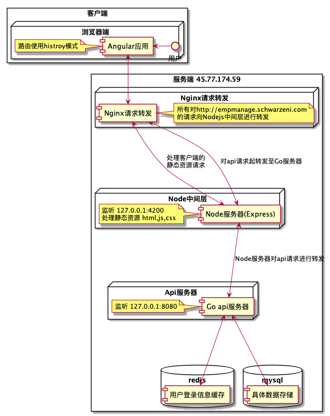
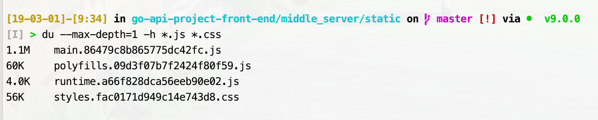
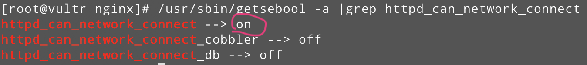

前面没有过单页面前后端分离的应用部署的经验；尝试着自己部署了一下，遇到了不少的问题，这里记录一下
自己yy的架构图

环境
- 前端技术栈：Angular v6.0.3，Angular Material v6.3.2
- NodeJS技术栈：NodeJS v9.5.0，Express v4.16.4，pm2 v3.3.1
- Go技术栈：Go v1.9，gin v1.2
- 服务器：CentOS7，Nginx v1.12.2
搭建Nodejs中转服务器
对Express比较熟悉，且其生态圈非常好，所以就使用Express中转服务器，功能有三
- 处理前端单页面应用路由History模式
- 处理静态资源：html，css，js文件
- 对所有api请求进行转发
部署要服务器上后使用pm2启动就行
关于NodeJS版本切换的问题，使用nvm就好，官方的教程是靠谱的，千万不要用yum来安装
大体的目录结构
1 | middle_server |
完成需求一，需要安装 connect-history-api-fallback
完成需求二，使用Express提供的api就可以了，当然，由于使用单页面应用，js，css文件会比较大，如下：

所有记得设置客户端缓存，可以参考这个链接，去直接看官方文档也行。
当然，设置了缓存的话就别忘了给静态资源文件名或请求的url打时间戳，不过这个应该是前端做的，比如我使用的Angular在打包的时候已经为文件打上时间戳了，虽然漏了html和图片文件….
完成需求三，需要安装express-http-proxy，当然，自己实现也可以，可以参看这篇问答，
所有最后server.js是这样的，记得最后把所有可更改的数值存放到json文件中方便更改，比如监听的端口
1 | const express = require('express') |
编译Golang
本地环境是MacOS，我不想把整个工程外加依赖都打包放到服务器上，然后在服务器上编译；可喜的是Golang是支持多平台编译的
我的服务器环境是 CentOS，所以就一句命令
1 | GOOS=linux GOARCH=amd64 go build -v /path/to/target/package |
关于Mysql
安装Mysql
跟着这个教程一步一步来就可以了
重置密码
唯一要注意的是，关于安装完毕后更改密码，大部分结果方案都是查看Mysql的输出日志找它生成的随机密码，也就是输入如下命令：
1 | sudo grep 'temporary password' /var/log/mysqld.log |
这里提供另一种方案，来自Change mysql root password on Centos7，我就直接copy过来了
1 | # 1. Stop mysql: |
修改默认编码
参考这个链接就ok了，大体的我就直接copy过来了
在my.cnf中添加如下内容，这个文件不出意外的话应该是在 /etc/my.cnf 路径下
1 | [client] |
关于Nginx
安装Nginx
参考这个链接就可以了，非常靠谱
打开端口
我希望查看运行在4200的NodeJS服务器，8080的Go服务器是否已经运行成功，就希望访问这些端口，但是CentOS默认都是关闭的，需要使用如下命令打开，参考来源
因为http/https的传输层用的是tcp，所以就直接写tcp了
1 | firewall-cmd --zone=public --add-port=4200/tcp --permanent |
输入如下命令查看是否开放
1 | firewall-cmd --list-ports |
同时，可以使用如下命令查看那些端口有程序监听
1 | netstat -ltnp |
配置
重头戏就是Nginx配置了，其实也很简单，在配置文件 /etc/nginx/nginx/conf中加这么一段就行了
1 | server { |
server_name 就是你的域名，这里我设了一个二级域名
关于参数 proxy_set_header，proxy_set_header，proxy_set_header，参考这篇文章：nginx 反向代理 端口 重定向问题
至于 proxy_cookie_path，是为了防止 location 和 proxy_pass 的路径不一导致cookie丢失的问题
1 | proxy_cookie_path off; |
详细使用请参考官网，这篇博文：解决nginx proxy_pass反向代理cookie,session丢失的问题 写的也不错
Nginx502
这个多半是SELinux的问题，参考博客nginx反向代理502-Bad Gateway问题解决的内容输入如下命令查看
1 | /usr/sbin/getsebool -a |grep httpd_can_network_connect |
如果如下输入为 off 则就是它的问题

输入如下命令就可以解决问题
1 | setsebool -P httpd_can_network_connect 1 |